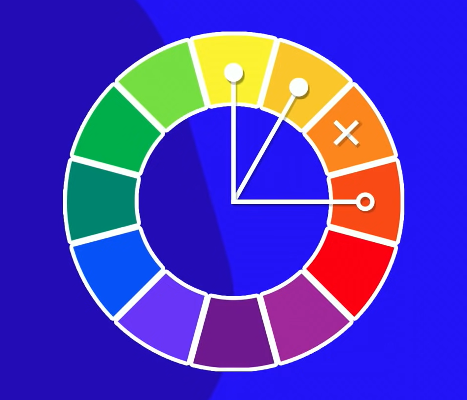
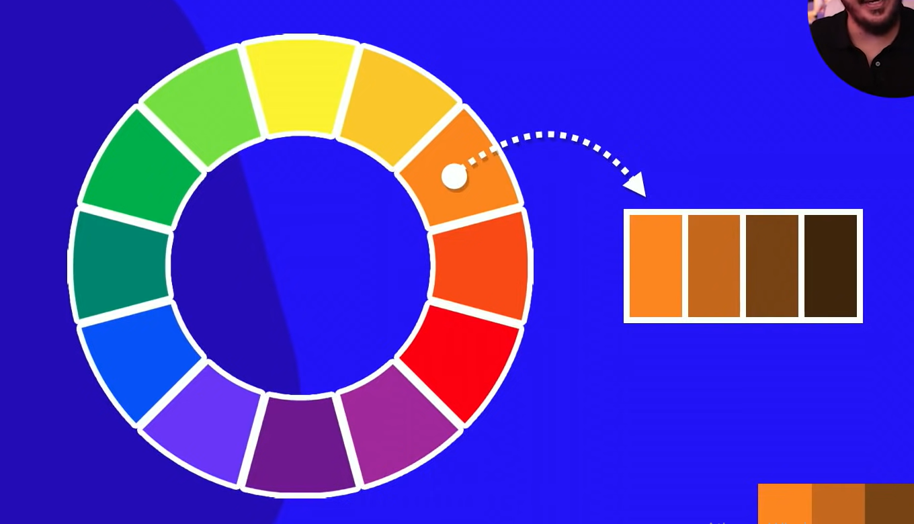

Uma harmonia grosseira
Também uma harmonia grosseira
"Tons Pasteis"
Toda paleta de cores para um site tem sempre entre 3 a 5 cores, isso tirando o PRETO e o BRANCO que estão sempre presentes
São cores que tem um grande contraste entre elas;
Cores "vizinhas" ou cores que são similares;
Cores com uma similaridade mas nem tanto;
Cores com uma similaridade mas nem tanto;
No circulo cromático pule 3 cores;
No círculo cromático pule 2 cores;

Escolha cores opostas uma da outra;
Utilizando uma única cor modifique a saturação e crie um degradê;
